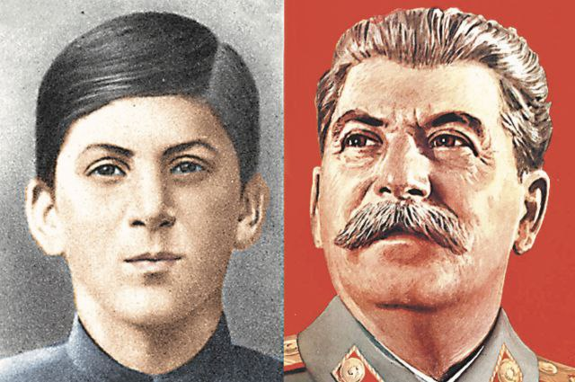

Иосиф Виссарионович Джугашвили (Сталин) родился 21 декабря 1879 г. в городе Гори (Грузия), в семье сапожника. В 1888 г. И. Джугашвили поступает в духовное училище и, в 1894 г. закончив его с отличием, поступает в духовную семинарию в Тифлисе. Здесь же он впервые знакомится с основными идеями марксизма. В 1898 г. семинарист Джугашвили вступает в грузинскую социал-демократическую партию «Месаме-даси», а в 1899 г. его исключили из семинарии за участие в деятельности подпольных марксистских кружков. С этого момента начинается история профессионального революционера-подпольщика, дерзкого экспроприатора, у которого было много псевдонимов, например, Рябой, Василий, Васильев. Однако из них в историю вошли две — Коба и Сталин.
В период 1902-1913 гг. И. Джугашвили был шесть раз арестован и сослан. Из мест отбывания наказания он совершил несколько дерзких побегов. С 1907 г. Джугашвили руководил деятельностью ЦК РСДРП в Баку и разделял идеи В.И. Ленина, по предложению которого в 1912 г. Сталина включили в состав Политбюро РСДРП. Вплоть до возвращения Ленина из Швейцарии в апреле 1917 г. Сталин возглавлял российское революционное движение. В 1917 г. он вошел в состав редакции газеты «Правда» и активно участвовал в подготовке ее первого номера. После захвата власти большевиками в октябре 1917 г. вплоть до 1922 г. Сталин занимал пост народного комиссара по делам национальностей. В 1922 г. он избран Генеральным Секретарем ЦК ВКП(б). И.В. Сталин предложил концепцию создания Советского Союза, ведущую роль в котором отводил сильной РСФСР. В конце 20-х гг. он критикует НЭП, предлагая перейти к форсированной индустриализации. Из-за серьезных политических разногласий и из нежелания принимать критику своего курса крупными российскими политическими деятелями, Сталин в 1930-е гг. проводит политику репрессий против старых революционеров, представителей интеллигенции и членов их семей. Репрессии, которым подвергся и командный состав нашей армии, значительно ослабили обороноспособность СССР. В стране создается система лагерей, в которых труд заключенных использовался при строительстве многих промышленных и инфраструктурных объектов.
В период с 1928-1940 гг. под руководством И.В. Сталина было реализовано практически три пятилетних плана развития экономики страны. К 1941 г. на Урале и в Сибири была создана новая промышленная база, что стало залогом победы СССР в Великой Отечественной войне. В международных отношениях, после прихода к власти нацистов, Сталин резко изменил традиционную советскую политику: если раньше она была направлена на союз с Германией против версальской системы, то теперь она заключалась в создании системы «коллективной безопасности» в составе СССР и бывших стран Антанты против Германии. Однако Франция и Англия опасались СССР и надеялись «умиротворить» Гитлера («Мюнхенский сговор»). К 1939 г. международная ситуация резко обострилась из-за претензий Германии к Польше. Англия и Франция на этот раз проявили готовность вступить в войну с Германией, пытаясь привлечь к союзу СССР. Летом 1939 г. Сталин, поддерживая переговоры о союзе с Англией и Францией, параллельно начал переговоры с Германией (Пакт о ненападении от 23 августа 1939 г.). 1 сентября 1939 г. началась Вторая мировая война, а 22 июня 1941 г. — Великая Отечественная война. С началом войны Сталин — Председатель Государственного Комитета обороны, нарком обороны и Верховный Главнокомандующий Вооружёнными Силами СССР. После войны Совет Министров СССР и ЦК ВКП(б) под руководством Сталина взяли курс на ускоренное восстановление экономики, разрушенной войной. До своей смерти Сталин сохранил за собой пост Председателя Совета Министров СССР. Умер И.В. Сталин 5 марта 1953 г.